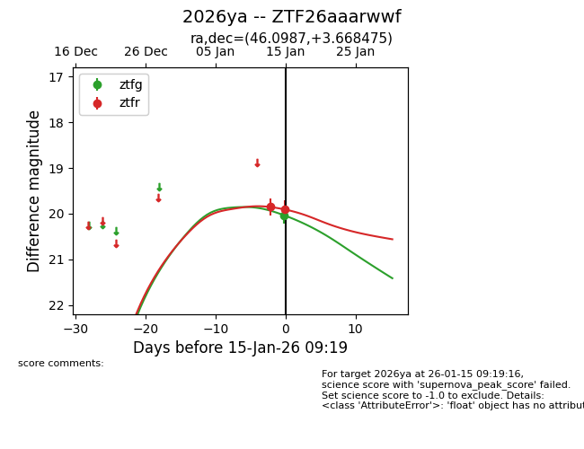
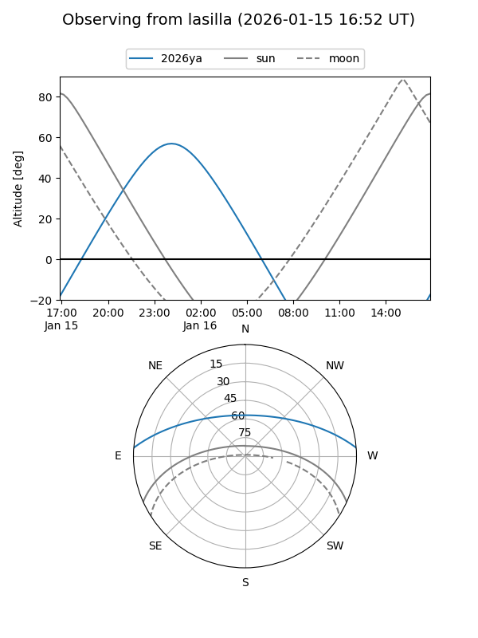
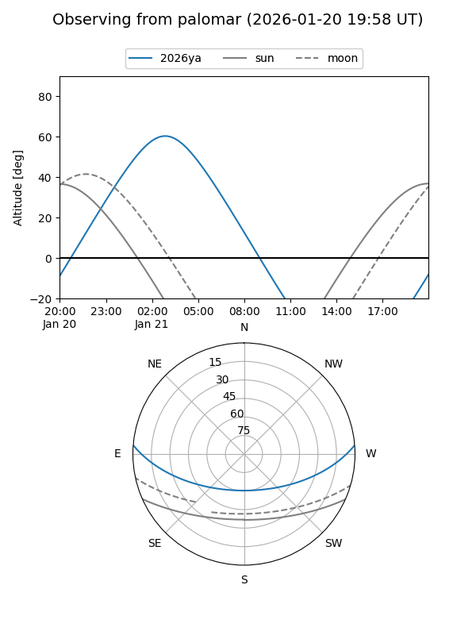
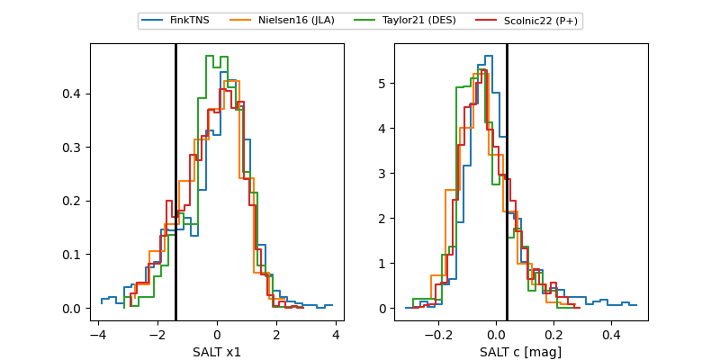

2026ya
Target 2026ya at 2026-01-23 08:41
Aliases and brokers:
FINK: link
Lasair: link
ALeRCE: link
TNS: link
YSE: link
alt names
ZTF26aaarwwf (ztf,fink_ztf)
2026ya (tns,yse)
Coordinates:
equatorial (ra, dec) = 46.0987,+3.66847
equatorial (HMS+DMS) = 03:04:23.69,+03:40:06.51
galactic (l, b) = (174.2764,-45.53478)
Flags:
Photometry:
last ztfg=20.29, ztfr=20.11
3 ztfg, 3 ztfr detections
Lightcurve

Visibility


Additional plots
